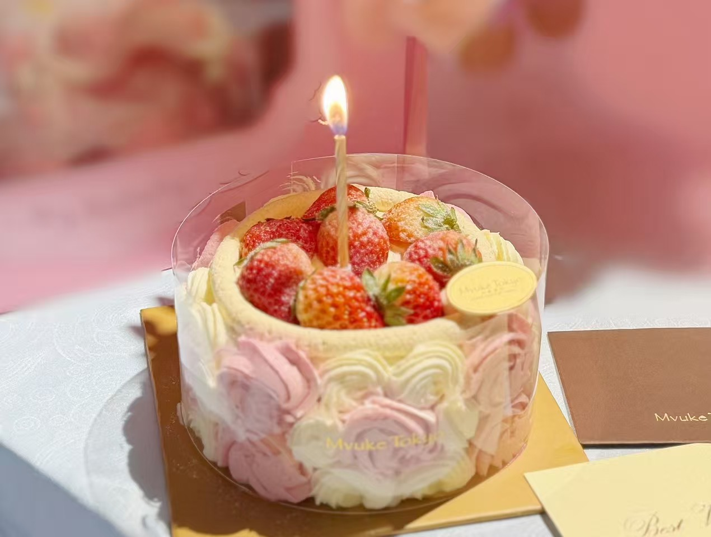

Chapter 3 is nearly done!
It took quite a bit longer than we expected. We wanted the characters’ charm to come through in their scenes, so we’ve been tweaking the staging bit by bit and adding expressions and animations. We’ve also added some side stories to earlier chapters so they lead more naturally into what comes next. We’re still polishing those additions, including the gameplay and stories for a few minigames.
We’ll share playable minigame prototypes in future devlogs so you can try them out yourselves! If you have thoughts or suggestions, we’d love to hear from you on social media or by email.
It's also Seal's birthday today, so the two of us went out to celebrate! We hope every day brings you as much joy as it brings Seal! (<ゝω・)☆ Kira!
